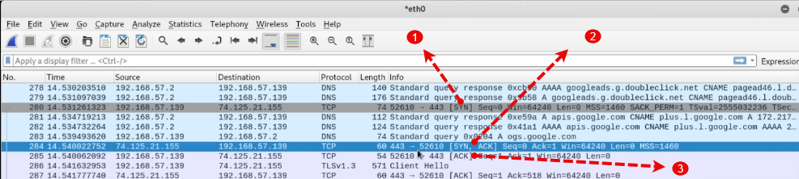

Transmission Control Protocol (TCP) vs User Datagram Protocol (UDP)
TCP
+ Connection oriented
+ hiigh reliability(Webpage: http/ https, ssh, ftp
UDP
+ Connectionless protocol
+ streaming services, DNS , Voip
TCP works based on 3-way handshake:
1- we send a SIN packet
2- we receive a SIN ACK packet
3- we send an ACK Packet
Example of a 3-way handshake in wireshark

port 80: HTTP
port 443: HTTPS